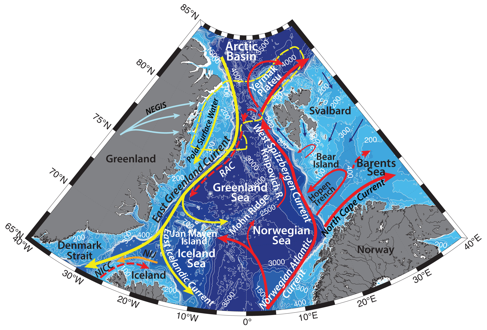

Schematic water circulation patterns and geographical place names in the Fram Strait region. Adopted from Wang et al., 2020; Ozhigin et al.,2000; Bourke et al., 1992; Rudels et al., 2002; McClimans et al., 2012; Brakstad et al., 2019. Dashed line marks the studied region.
Fram Strait is the main deep oceanic gateway (450 km width, 2700 m sill depth) between the Atlantic and Arctic Oceans, hence it is an important region for the exchange of mass, heat, and salt (e.g. Boyd and D'Asaro 1994; Rudels et al., 2002). Two main currents determine hydrographic structure of the strait: the West Spitzbergen Current (WSC) carries warm and salty Atlantic Water into the Arctic Ocean on the eastern side of the strait, while the East Greenland Current (EGC) transports ice and cold and fresh waters out of the Arctic on its western side (Saloranta and Haugan, 2001; Muench et al., 1992). Mean transport through the Fram Strait is southward, driven by the density differences between the fresher Arctic Ocean and more saline Atlantic Ocean, in combination with wind forcing and tidal currents (Hunkins, 1990).
Characteristics of the inflowing into the Arctic Basin Atlantic water (AW) vary on both seasonal and decadal scales. For example, Loeng (1991) has described the inflow of Atlantic water into the Barents Sea between Bear Island and Norwegian coast to be 3.5 – 6.5 °C, with salinity greater than 35. Relatively warm and saline Atlantic water from the Norwegian Atlantic Current in the Norwegian Sea bifurcates into two branches at the entrance to the Barents Sea – one flows to the north through the Fram Strait and around the Yermak Plateu (T>0°C, 34.75<S<34.9; known as West Spitzbergen Current or Fram Strait Branch Water – FSBW; Lien & Trofimov, 2013), another turns east onto the Barents Shelf (the North Cape Current – NCaC, also known as Nordkapp Current or Barents Sea Branch Water – BSBW; e.g., Zubov, 1933; Ingvaldsen, 2005). The volumes of the two branches are thought to be comparable (Lien & Trofimov, 2013). West Spitzbergen Current is estimated to carry between 2 and 3.7 Sv of Atlantic water. Some of the AW recirculates in the Hopen Trench of the Barents Sea and can exit back south of Bear Island as a topographically trapped westward current (Loeng, 1991; Ingvaldsen, 2005).
West Spitzbergen Current is about 100 km wide, and predominantly steered by topography, confined to the continental slope (Bourke et al. 1988). It can reach up to 35 cm/s at the surface (Boyd and D'Asaro 1994; Fahrbach et al. 2001; Saloranta and Svendsen 2001). At approximately 79°N part of the West Spitzbergen Current turns to the east along the northern coast of Svalbard (e.g. Muench et al., 1992), while another branch continues northwards around the Yermak Plateau (Yermak Branch). From there the Yermak Branch either turns eastwards and eventually joins the main branch at the continental slope, or curves cyclonically westward and then southward, joining the EGC (Bourke et al. 1988; Gascard et al. 1995; Saloranta and Haugan 2001). It is known as Return Atlantic Current (RAC; Paquette et al. 1985; Aagaard and Coachman 1968; Bourke et al. 1988), carrying Re-circulating Atlantic Water (e.g. Rudels et al., 2002), and is advected in the flow southward along the eastern edge of the EGC to a depth of about 300 m. East Greenland Polar Front is formed between the RAC and EGC, showing sharp temperature and salinity gradients (Bourke et al. 1988).
Large diurnal tidal currents, observed over the Yermak Plateau, enhance mixing in the area and expedite transformation (cooling and deepening) of the AW current (Gascard et al. 1995; Saloranta and Haugan 2001). WSC is prone to large spatial and temporal variability on various scales. Mesoscale eddies are known to be formed in the region, enhancing mixing and water transformation as well (Piechura et al., 2001). Hunkins (1990) suggests, that the majority of eddies are generated at the baroclinically unstable front between EGC and WSC at the strait, and are advected southwards.
The Fram Strait Branch Atlantic Water (T>0°C, S>34.75; Lien & Trofimov, 2013) that enters the Nansen Basin cools on its way northwards. In the Arctic Basin it is advected eastwards in a largescale cyclonic boundary current along the continental slope (about 100 – 700 m depth; e.g. Rudels et al., 1994). As it flows eastwards FSBW subducts below the cold halocline layer and forms a subsurface temperature and salinity maximum. The upper boundary of AW, which is considered to be isotherm of 0 °C resides at approximately 100-200 m depth (Rudels and Friedrich, 2000). Some of the FSBW enters the Eurasian shelf from the north through submarine valleys and canyons (e.g. Matishov et al. 2009; Loeng et al. 1993; Schauer, Loeng et al. 2002; Lien & Trofimov, 2013). They can bring nutrients and zooplankton to the shelf via upwelling through the troughs.
Warm Atlantic Water of the WSC keeps the region free of ice (Aagaard et al. 1987; Piechura et al. 2001). It is cooled by atmosphere and on its way northwards it can be transformed into Lower Arctic Intermediate Water (AIW; e.g. Boyd and D'Asaro 1994; Rudels et al., 2002) or into Polar Surface Water (PSW; also referred to as Arctic Surface Water, e.g. T<-1°C, 34.3<S<34.7; e.g. Rudels et al., 2002; Lien & Trofimov, 2013) by mixing with the meltwater. During summertime even fresher (varying from below 31.0 and up to 34.2; Loeng, 1991) water from the melting of sea ice overlays the PSW, occupying the top 5-20 m of the water column.
In the Arctic Basin PSW is underlaid by halocline layer. The vertical mixing that happens during wintertime is crucial for bringing the nutrients up to the surface for the development of spring blooms. Winter convection often reaches the bottom on the shelf, however in the deep Arctic basin it is not possible due to large salinity gradients. There freezing of the ice causes brine rejection, which in turn aggregates underneath the ice forming the halocline. Halocline prevents the heat from underlaying Atlantic water reach the surface (e.g. Loeng 1991; Hunkins, 1990), however, in certain regions the ocean heat can penetrate to the surface and induce sea ice melting (Wang et al., 2020).
The inner shelf part of the WSC is bounded by the Spitzbergen Coastal Waters on the shelf (which consist of both modified Arctic and Atlantic waters, as well as coastal runoff into the fjords of the archipelago). Arctic Front forms between the cold and fresh Coastal Water and warm and salty Atlantic Water of the WSC (Saloranta and Svendsen 2001).
Polar Deep Water (PDW) lies beneath Atlantic Water (beneath the lower 0°C isotherm) at 600 – 700 m. PDW has almost uniform salinity (S=~34.94; e.g. Hunkins, 1990), while the temperature slightly decreases with depth down to 2000 m and slightly increases deeper than 2000 m at the adiabatic gradient (Aagaard et a1., 1985b; Hunkins, 1990). PDW forms as a result of mixing of AW and cold and saline Winter Water from the shelves, and occupies more than half of the volume of the Arctic Basin. In the central Arctic Ocean itself strong salinity stratification near the surface prevents the formation of deep water (Hunkins, 1990). Various modes of Polar Deep Water are known to exist in the Arctic: Eurasian Basin Deep Water in the Eurasian Basin, Canadian Basin Deep Water (CBDW) in the Canadian Basin (but also includes EBDW), Nordic Deep Water (NDW) in the Nordic Seas (including Greenland, Iceland, Norwegian Seas deep waters; e.g. Rudels et al., 2002).
East Greenland Current is the main conduit for waters exiting the Arctic Ocean. EGC flows from the Fram Strait southwards to the Cape Farewell and carries sea ice, as well as cold and fresh Polar Surface Water (-1.9<T<0°C), Atlantic Water both recirculated in the Basin (also known as Arctic Atlantic Water; T<~1°C; e.g. Rudels et al., 2002) and the Return Atlantic Water from the Fram Strait, and cold Polar Deep Water out from the Arctic Basin (e.g. Rudels et al., 2002). On its way along the Greenland slope the EGC interacts with waters from the Greenland and Iceland Seas and incorporates additional intermediate water masses.
While the high temperatures of the Atlantic Water in the West Spitzbergen Current contribute to keeping the region ice-free throughout the year (Lien & Trofimov, 2013), there is a southward transport of sea ice on the western side of the strait with the East Greenland Current. Transpolar drift carries ice across the Arctic Basin towards Fram Strait, where mean speeds can be about ~10 km per day (Hunkins, 1990).
The climate change over the last decades has resulted in the dramatic sea-ice loss in the Arctic (e.g. in 2007 and 2012; Polyakov et al., 2017). Climatic variations in the Arctic seas and Arctic Basin highly depend on the activity and properties of the inflowing Atlantic Water (Ingvaldsen, 2005), especially while stratification is weakened and vertical mixing subsequently increased. Subsequent “Atlantification” (which is “the northward movement of sea ice in the Barents Sea, with attendant reductions in stratification, increased vertical mixing, and altered primary production”; Polyakov et al., 2017) will have dramatic effects on other geophysical and biogeochemical components of the Arctic Ocean system, e.g. enhance nutrient supply and primary production, alter freshwater storage, intensify shelf-basin exchange.
Northeast Greenland coastal region used to be covered with perennial fast ice, known as the Norske Øer Ice Barrier (NØIB; Sneed and Hamilton, 2016). NØIB varied in size from year to year, and has been observed to extend, for example, ~140 km east of 79 °N and ~375 km from south to north. Since 2000 the NØIB has broken up during many summers, so that it doesn’t have a persistent core of multi-year fast ice anymore, and, as the summers continue to warm in the region, it is unlikely that the NØIB will retain a year-round, semi-permanent feature of the Northeast Greenland coast (Sneed and Hamilton, 2016).
Greenland Ice Sheet provides ice, freshwater, and terrigene material into the coastal waters on the Greenland Shelf. A ~600-km-long Northeast Greenland Ice Stream (NEGIS) inflows into the Northeast Greenland region. It drains ~12% of the interior Greenland Ice Sheet via three fast-flowing marine-terminating outlet glaciers: Nioghalvfjerdsfjord Gletscher, Zachariae Isstrøm, and Storstrømmen Gletscher, which all accelerated and retreated after more than a decade of stability after 2006 (Larsen et al., 2018).
The Northeast Water (NEW) polynya can form on the Northeast Greenland shelf. It can reach 100 km long, stretching between Nordöstrundingen, Greenland’s most northeasterly cape and 79 °N. It is suggested to be formed and maintained because two ice barriers, one along the Ob Bank southeast of Nordöstrundingen and another, centered on Norske Øer, the NØIB, that shelter the region from the sea ice exiting through the Fram Strait and flowing southward. The ice barrier at the Ob Bank steeres the southward flowing sea ice in the EGC eastwards, away from the coast, while the NØIB blocks sea ice entrained in the Northeast Greenland Coastal Current from flowing northward into the polynya (Sneed and Hamilton, 2016).